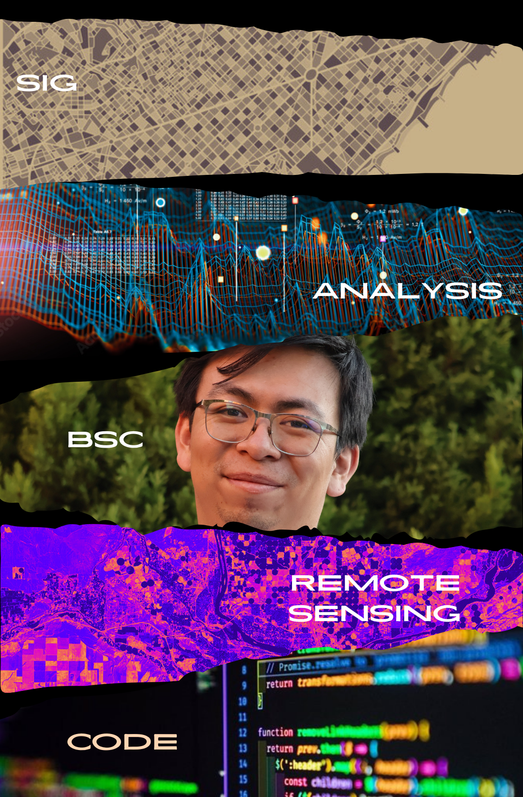

habilidades Principales
- Análisis y Gestión de Datos Geoespaciales:
Experiencia en la actualización de cartografía, elaboración de capas temáticas SIG,
y geo-codificación de datos espaciales.
- Desarrollo y Mantenimiento de Sistemas de Información Geográfica (SIG):
Manejo de datos SIG, procesamiento de imágenes de dron, y modelación de procesos hídricos.
- Liderazgo y Coordinación:
Gestión de equipos, coordinación de turnos, y liderazgo en atención al cliente.
- Análisis Socioeconómico y Rutas Óptimas:
Análisis socioeconómico para la colocación de créditos y optimización de rutas para recuperación de cartera.
- Manejo de Inventarios y Ventas:
Seguimiento a indicadores de desempeño en ventas, elaboración de inventarios, y arqueo de sucursales.
- Generación de Cartografía Temática:
Creación de cartografía diagnóstico y estratégica, y colaboración en artículos científicos.
- Desarollo web:
Creación de aplicaciones web dinámicas y funcionales, y colaboración en proyectos de equipo.
Experiencias
- Grupo Salinas (Marzo de 2023 - Marzo de 2024) - Consultor de Zonificación
- Cinépolis (Agosto de 2022 - Marzo de 2023) - Administrativo
- Cinépolis (Agosto de 2022 - Marzo de 2023) - Líder de Servicio
- Unidad GITS (Enero de 2022 - Diciembre de 2022) - Analista de Sistemas de Información Geográfica
- Laboratorio iSTAR (Agosto de 2021 - Enero de 2022) - Analista de Sistemas de Información Geográfica
- Nanosapiens (Marzo de 2021 - Agosto de 2021) - Analista de Sistemas de Información Geográfica
- Dirección de Obras Públicas y Desarrollo Urbano (Septiembre de 2020 - Marzo de 2021) - Analista de Sistemas de Información Geográfica
Estudios
- Especialidad en Cartografía Automatizada, Teledetección y Sistemas de Información Geográfica (Agosto de 2024 - presente )
- Universidad Autónoma del Estado de México - Lic. Geoinformática (Agosto de 2017 - Enero de 2022)
- Centro de Bachillerato Tecnológico N.1 Emiliano Zapata - Técnico Contable (Agosto de 2012 - Julio de 2015)
Certificaciones
- Oracle Next Education (ONE) (Mayo de 2024 - presente )
- Certificado Profesional en Análisis de Datos de Google (Mayo de 2024 - presente)
